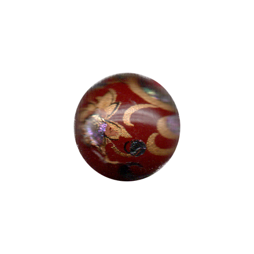

<!DOCTYPE html>
<html lang="kr"></html>
<head>
  <meta charset="UTF-8">
  <meta http-equiv="X-UA-compitable" content="IE-edge">
  <meta name="viewport" content="width=device-width", initial-scale="1.0">
  <title>h</title>
  <link href="h_.css" rel="stylesheet">
  <script type="text/javascript">
    document.oncontextmenu = function(){return false;}
    function redirectToRandomPage() { 
            // Array of specific pages on the website 
            const pages = [ 
                'index5.html', 
                'index12.html', 
                'index19.html', 
                'index26.html' 
            ]; 
            // Generate a random index 
            const randomIndex = Math.floor(Math.random() * pages.length); 
            // Redirect to the randomly selected page 
            window.location.href = pages[randomIndex]; 
    }
  </script>
</head>
<body oncontextmenu="return false" onselectstart="return false" ondragstart="return false" onkeydown="return false">
  <div class="box-container">
      <div class="box-item1">
        <div class="map">
          <a onclick="redirectToRandomPage()">
            
          </a>
          <p>논문 발췌</p>
          <div class="comment">
            <p>해러웨이의 &lt;사이보그 선언문&gt;을 독해하는 데 도움이 되는 논문의 일부를 발췌한 페이지. 다양한 논의를 통해 해러웨이의 세계관을 깊이 이해할 수 있다.</p>
          </div>
      </div>
    </div>
    <div class="box-item2">
      <div class="textbox-center">
        <div class="textbox1">
          <h2>사이보그 캐릭터 유형의 변이 연구 <br>- &lt;공각기동대&gt;의 매체 변화를 중심으로</h2>
        </div>
        <div class="textbox3">
          <p>한서대학교 일반대학원<br>융합디자인학과 융합영상애니메이션전공<br>애홍연<br>2020년 2월</p>
        </div>
        <br>
        <div class="textbox2">
          <p>트랜스휴머니스트들은 포스트휴먼을 “생물학적 인간의 한계를 극복한 인간, 생물학적 인간 이후의 인간”<span title="이경란, 『로지 브라이도티, 포스트휴먼』, 커뮤니케이션북스, 2017, p.15."><sup>6&#41;</sup></span>으로 정의한다.</p>
        </div>
        <div class="textbox2">
          <p>이른바 하드 SF로 분류되는 <공각기동대> 텍스트는 일본 SF 작가 시로 마사무네(<span class="chinese">士郎正宗</span>, しろ まさむね)의 만화를 원천서사(the source narrative)<span title="미디어 컨버전스 시대의 서사는 스토리와 스토리텔링의 양자를 모두 포괄하는 의미를 지닌다. 서사는 인간 활동의 거의 모든 측면에 대한 정보를 제공할 뿐 아니라, 하나의 매체에서 다른 매체로 옮겨가면서 끊임없이 변주되어 새로운 표현 방식을 획득하게 된다. 이처럼 다양한 매체를 가로지르며 변화하는 서사 형식의 원형질이 곧 원천서사이다. 허만욱, 「문화콘텐츠에서 서사매체의 변용과 발전 전략 연구」, 『우리문학연구』29, 2010, pp.460-462 참조."><sup>15&#41;</sup></span>로 삼고있다. 시로 마사무네는 아서 코스틀러(Arthur Koestler)의 심리철학서『기계 속의 정신(The Ghost in the Machine)』에서 영감을 받아 이 작품의 제목을 지었다고 한다. 원래 이 말은 길버트 라일(Gilbert Ryle)이 데카르트의 심신이원론을 비판할 때 사용한 것이다.<span tilte="길버트 라일, 『마음의 개념』, 이한우 옮김, 문예출판사, 1994, pp.23-44 참조."><sup>16&#41;</sup></span></p>
        </div>
        <div class="textbox2">
          <p>일반적으로 포스트휴먼은 과학기술에 의해 신체적으로 향상되고 강화된 인간을 가리키지만, “디지털 기술과 바이오기술이 변화시킨 환경 속에서 이전과는 다른 방식으로 살아가게 된 인간”<span title="전혜숙, 『포스트휴먼 시대의 미술: 신체변형 미술과 바이오아트』, 아카넷, 2015, p.31."><sup>26&#41;</sup></span>을 통칭하기도 한다. 이러한 관점에서 더 나아가 지나치게 기계에 의존적으로 변해 버려 기계 없이 일상적인 생활이 불가능해진 현대의 인류는 그 자체로 이미 사이보그에 다름이 아니라는 주장까지 제기되고 있다.<span title="이진우, 『테크노인문학』, 책세상, 2013, p.182."><sup>27&#41;</sup></span> 즉 이미 인간은 자연적인 신체를 유지하고 있더라도 생물학적 한계를 극복한, 포스트휴먼이라는 것이다.</p>
        </div>
        <div class="textbox2">
          <p>‘사이버펑크(cyberpunk)’라는 어휘는 원래 생명체와 기계의 결합체에 대한 통신과 제어를 연구하는 학문인 ‘사이버네틱스(cybernetics)’와 간단한 악기와 멤버로 단순하게 구성되고 과격한 록을 지향하는 인디밴드의 음악을 가리키던 ‘펑크 록(Punk Lock)’<span title="“펑크는 1970년대 영국에서 시작된 음악 장르이자 대표적인 하위문화이다. 1970년대는 포스트 모더니즘이 도래하던 시기다. 음악을 포함한 모든 분야에서 기존의 고급스럽고 엘리트주의적인 전통질서에 반하는 흐름이 나타났다. 당시 영국은 오일 쇼크와 청년실업, 빈민, 노동문제 등으로 극심한 사회 불안을 겪고 있었다. 이러한 상황과 함께 화려한 기교들을 내세우는 부유한 록스타들의 글램 록은 노동계급의 청년들을 소외시켰고, 이에 반감을 표현하며 등장한 음악이 펑크다. ‘아티스트와 청중 사이의 심화된 간극’ 속에서 펑크는 ‘노동계급성’을 대변했다. ‘펑크의 더러움과 세속성은 글램 록 슈퍼스타들의 거만함, 우아함 그리고 장황함과 직접적으로 반대’되었으며, 이러한 점이 ‘펑크의 미학’이었다(Hebdige, 1998; 91),” 김영은, 「펑크 록 문화에서 생성·공유되는 의미들- 1990년대 중후반 홍대 씬을 중심으로」, 성공회대학교 문화대학원 미디어·문화연구 전공 석사학위논문, 2017, pp.12-13."><sup>33&#41;</sup></span>이 결합한 것이다. 따라서 사이버펑크라는 말에는 평등주의적이고 권위에 저항적이며 행동주의적인 ‘펑크’ 문화의 방향성이 내재되어 있다. 즉 사이버펑크는 기본적으로 반문화(counter culture)적인 성격을 지닌다.</p>
        </div>
        <div class="textbox2">
          <p>탈육화 담론은 미래의 새로운 인류는 자신의 ‘몸’을 벗어남으로써 더 큰 자유를 만끽할 수 있다고 말한다. ‘탈육체’는 포스트휴먼의 전제조건인 셈이다.</p>
        </div>
        <div class="textbox2">
          <p>사이보그는 순수한 자연의 산물로서의 생명 유기체가 아니며 순수한 의미에서 문화적인 창조물도 아니다. 그것은 양자의 혼합이다.</p>
        </div>
        <div class="textbox2">
          <p>포스트 모더니즘적 존재로서 사이보그는 기계 속에 기생하면서 기계가 인간의 지체의 확장이 되게 하고, 모든 범주와 대립하는 양극의 한계를 모호하게 만든다. 그것은 혼혈의 잡종이기 때문에 온갖 괴물로 가득하며 이성적으로 사고되는 이상적인 세계와는 전혀 다른 현대 사회의 조건에 충분히 적응할 수 있다.</p>
        </div>
        <div class="textbox2">
          <p>사이버펑크 작품에서 작가는 국가의 기업주의(corporatocracy)의 추악한 약점을 폭로하는 데 방점을 둔다. 사이버펑크의 스토리는 통상적으로 해커, 인공지능 및 대기업 사이의 갈등을 둘러싸고 전개되며, 배경은 멀지 않은 장래의 디스토피아 지구로 설정되었다. 이는 초기 SF 문학이 중시했던 광대한 우주 공간에 대한 관심과는 사뭇 다른 양상을 보인다.</p>
        </div>
        <div class="textbox2">
          <p>‘일망 감시 체제’의 풍경을 그려낸 오시이 마모루의 시선은 &lt;공각기동대&gt;에도 그대로 이어진다. ‘공안 9과’를 드나드는 모든 인물은 CC TV에 의해 모니터링되며, 출입 시간은 초 단위로 체크되어 광학미체(Optical camouflage)<span title="광학을 이용한 위장술. 만화에서는 기술의 생산년도에 따라 29, 17 등 버전을 분류하여 표기하고 있다. 시로 마사무네, 김동욱 옮김, 『공각기동대1』, 대원씨아이, 2017, p.8 등 참조."><sup>82&#41;</sup></span>로 신체를 감추고 있다 하더라도 존재를 감출 수 없다. 그 세계는 한편으로는 유기 생명체로서 인간의 한계를 넘어서게 만들며, 다른 한편으로는 자연적인 존재로서 인간 주체가 가지는 자유 의지를 억압하고 통제한다.</p>
        </div>
        <div class="textbox2">
          <p>유기 생명체와 기계의 결합으로서 사이보그는 이제 더 이상 문학과 영화의 상상력 속에만 존재하는 이미지가 아니다. 안경을 낀 인간과 같은 아주 보편적인 형상으로부터 의수와 의족, 인공 심장이나 인공 관절, 인공 혈관을 이용한 수술을 받은 환자들, 임플란트와 삽입렌즈 시술, 실리콘과 보톡스를 활용한 다양한 미용술을 받은 우리 주변의 평범한 사람들에 이르기까지, 해러웨이의 말처럼 현재의 인류는 이미 사이보그라고도 할 것이다.</p>
        </div>
        <div class="textbox2">
          <p>자연은 인간의 세계가 되었고, 인간은 자연의 세계가 되었다. 우리는 ‘사이보그’ 시대에 진입했다. ‘자연’은 ‘문화’화 되어 더 이상 존재하지 않으며, ‘문화’는 ‘자연’화 되어서 부여받은 물질 현실의 형식도 더 이상 존재하지 않는다.</p>
        </div>
        <div class="textbox2">
          <p>시로 마사무네의 세계관에서 “사이보그란 신체의 일부, 또는 대부분을 인공 기관으로 대체한 개조 인간을 뜻한다.”<span title="시로 마사무네, 위의 책, 2017, p.97."><sup>107&#41;</sup></span> 이어서 그는 쿠사나기 모토코라는 캐릭터의 신체에 대해 다음과 같이 묘사한다. “신체의 90% 이상을 기계화한 사이보그다. 그녀 본래의 육체는 뇌나 척수 뿐으로, 그나마 그림에서 보이듯 커버 안에 들어가 있기 때문에 외형상 로봇인지 사이보그인지 분간이 어렵다. 내분비계나 임파계, 비장, 간장이나 골수 등, 어떻게 인공 기관화해야 할지 짐작도 가지 않는 조직도 있는 관계로, 이와 같은 사실상 완전 기계화 사이보그가 실현될 수 있을지 여부는 심히 의문이지만, 다른 수많은 기관은 인공 기관이 이미 실존한다.”<span title="시로 마사무네, 위의 책, 2017, p.97."><sup>108&#41;</sup></span></p>
        </div>
        <div class="textbox2">
          <p>&lt;공각기동대&gt;라는 제목에서 ‘공각(<span class="chinese">空殼</span>)’은 비어있는 암슈츠(Arm Suits, 강화된 외골격)을 가리키며, 이것은 사이보그화를 위해 장착되는 의체 부분으로 이러한 의체는 속이 비어있어서 마치 옷처럼 사람의 몸에 걸쳐지는 구조를 갖는다. 이러한 공각에는 인간의 자연 신체 일부가 적재되는 경우도 있지만, 인공지능(AI)가 적재되기도 한다.</p>
        </div>
        <div class="textbox2">
          <p>쿠사나기 모토코와 같은 캐릭터는 대뇌의 일부와 척수를 제외하고는 신체 대부분을 의체로 기계화한 경우이며, 본래의 자연 신체가 지니고 있던 성별에 따라 성인의 여성 신체로 의체화했다. 신체의 대부분이 의체이므로 그 신체적 능력은 전적으로 기계적 성능에 따른다. 그러나 그 신체의 활용은 대뇌의 일부에 남아있는 ‘고스트’의 명령에 따르는 것이므로, 그녀는 완전한 ‘인간’으로 간주된다. 즉 이 작품에서 ‘인간’의 조건은 자유의지를 가진 인간의 영혼, 즉 고스트인 것이다.</p>
        </div>
        <div class="textbox2">
          <p>쿠사나기 모토코는 유년 시절 비행기 사고에서 구사일생으로 살아남았으나, 대뇌와 척수의 일부를 제외하고는 모두 상해를 입었기 때문에, 나머지 기관을 모두 의체로 대체하게 되었다. 이후 전신을 완전히 의체화하고 자신의 대뇌를 전자두뇌와 융합함으로써 의식형 의체 결합 사이보그로 전화하였다.</p>
        </div>
        <div class="textbox2">
          <p>쿠사나기 모토코는 대뇌의 일부분과 척수만 자연 신체로 남아있고 나머지는 모두 의체화한 복합강화형 사이보그로서 어린아이나 남성 의체와 결합하더라도 전혀 문제없이 생존이 가능하다. 또한 &lt;이노센스&gt;에서는 이미 ‘인형사’와 결합해 네트워크 상에서 유동하는 ‘고스트’가 된 쿠사나기의 일부 데이터가 인간형 로봇인 가이노이드에 로딩되는 모습이 등장하는데, 이는 그녀가 더 이상 물리적 존재에 속박되지 않는 완전한 자유를 얻었음을 의미하는 것이다.</p>
        </div>
        <div class="textbox2">
          <p>트랜스휴머니즘 사조의 영향 아래, 첨단 과학의 신봉자들은 부단히 발전해가는 기술에 비해 퇴행적인 존재로 낙후되어가는 인간의 존재를 ‘골동품’<span title="Frank Hartmann, 이상엽/강웅경 역, 미디어 철학, 북코리아, 2008, p.295."><sup>120&#41;</sup></span>으로 치부하고 인간의 “신체는 퇴화했다(The Body is Obsolete)”라고 선언하며 스스로를 대상으로 사이보그 신체를 실험하기에 이르렀다.<span title="김지훈, 「신체는 정말 퇴화했는가?: 스텔락의 신체-기계퍼포먼스」, 『기계의 꿈, 자동인형에서 로봇까지』, 디자인미술관, 2006, p.107."><sup>121&#41;</sup></span></p>
        </div>
      </div>
    </div>
    <div class="box-item3">
      <a href="d5.html">
        </a>
        <span class="text1">d. 픽션 속<br>사이보그적 여성</span>
      <a href="e5.html">
        </a>
        <span class="text2">e. 그 자체로<br>신성한 것은<br>없다 </span>
      <a href="l5.html">
        </a>
        <span class="text3">l. 사이보그적 존재들의 확장된 신체</span>
      <a href="n5.html">
        </a>
        <span class="text4">n. 역사 속<br>사이보그적 여성</span>
    </div>
  </div>
</body>